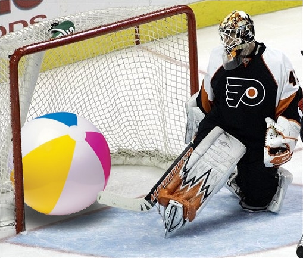

Or at least, all of the generators do. At a glance, metalsmith seems like it might kind of suck a little less, but even it sucks.
I don't just want to build a blog. I want to generate pages that don't necessarily have a 1-to-1 correspondence with source files. I don't just want to make a blog. I want to generate a website. So out the window go nearly all the generators: jekyll, pelican, ...
I can make metalsmith do this, even if the convention of calling documents in the pipeline "files" makes me feel like breaking the one-file-in one-file-out is doing it wrong. So I'm half-way.

How about static and binary files? Well metalsmith seems to suck here too. Perhaps it just needs the right plugin. I haven't seen it yet.
So I'm making this (yet unnamed) static framework. It will probably suck too. But hey, maybe it will be fun to try.